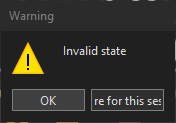

Not to be confused with Horibyte Power.
Horibyte Moments
Horibyte Moments (formerly known as Stuffy Moments) are moments when Horibyte breaks any sort of tech (that being software, hardware, services, etc) in an unexpected way. They were introduced in January 2024.
Types of Horibyte moments
Horibyte moments can vary from a range of ‘moment levels’, with that being the following:
- Errors: Said moments can be various errors, being just normal ones, or something extremely rare.
A Dolphin warning with a button whose text is cropped.
- Software Gore: These moments are when software breaks in a funny and weird way, these are the most common Horibyte Moments.

A KDE Plasma error window but the text is just boxes
- Software Mistakes: Some temporary string here.
Gallery of Horibyte Moments

A MC 1.0 window where the Steve model, hotbar and achievement get panel are all broken.

A content menu on WinRE where the arrows on the menu are Unicode boxes.

HELP I CAN'T GET OUT - Horibyte, 2024

m o o d
 being missing as well.")
Windows Boot Manager moment

This is what I get for trying to install Windows Vista manually on a Kaby Lake PC.. - Horibyte

aw shucks - Horibyte